Creating a Partner Account
This guide walks new partners through the account signup process on the DDMatch platform.
Step 1: Signup
Navigate to the homepage and click the “Partner Login” tab in the top menu.
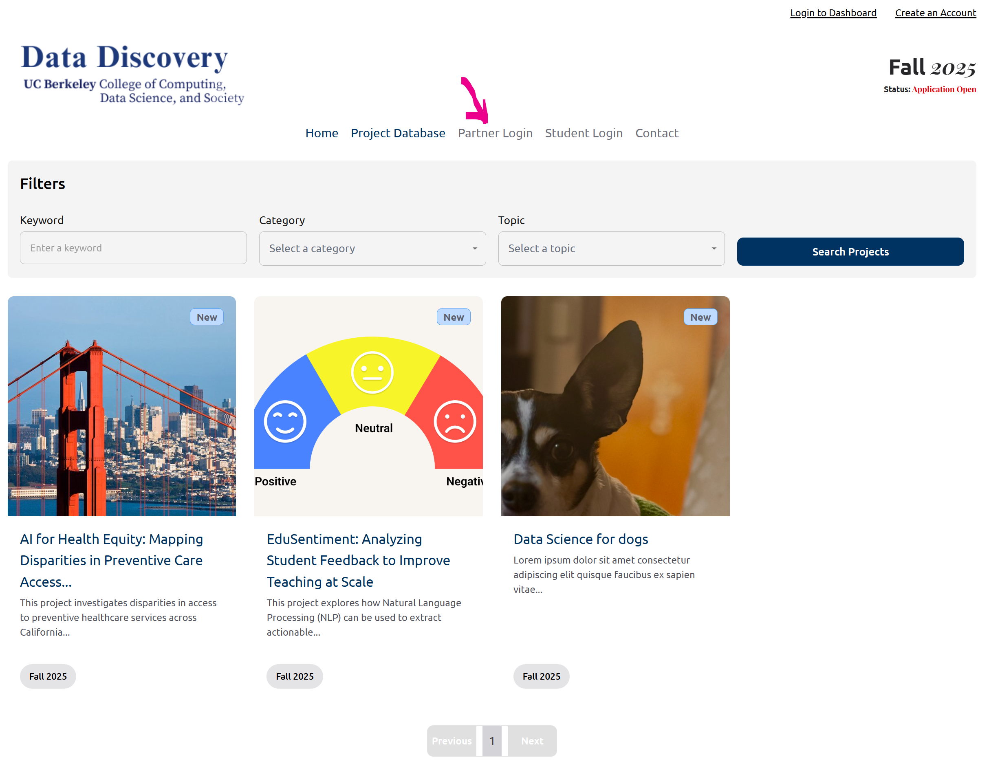
This will redirect you to the partner login portal where you can either create a new account or log in with your existing credentials.
Step 2: Click “Signup”
On the login screen, locate the “Don’t have an account? Signup” link below the login button and click it.
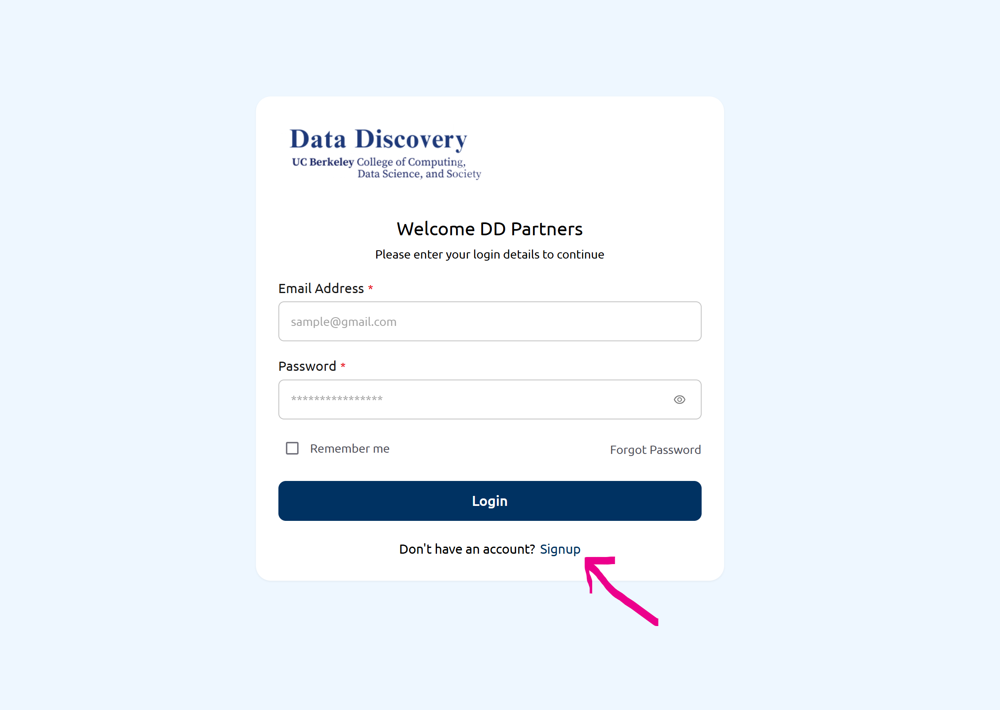
This will redirect you to the registration form where you can create your new Partner account.
Step 3: Complete the Signup Form
Enter your email address and choose a secure password that includes at least one lowercase letter, one uppercase letter, one number, and one special character. Confirm your password, then click “Signup”.
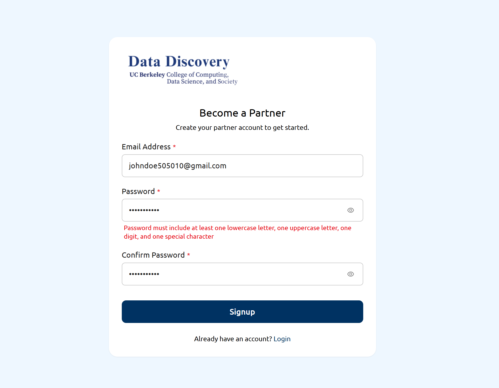
Once submitted, you will be prompted to verify your email before gaining access to your partner dashboard.
Step 4: Verify Your Email
Check your inbox for a one-time password (OTP) sent to your registered email address. If you don’t see it, be sure to check your spam or junk folder. Enter the 6-digit code in the boxes provided, then click “Confirm”.
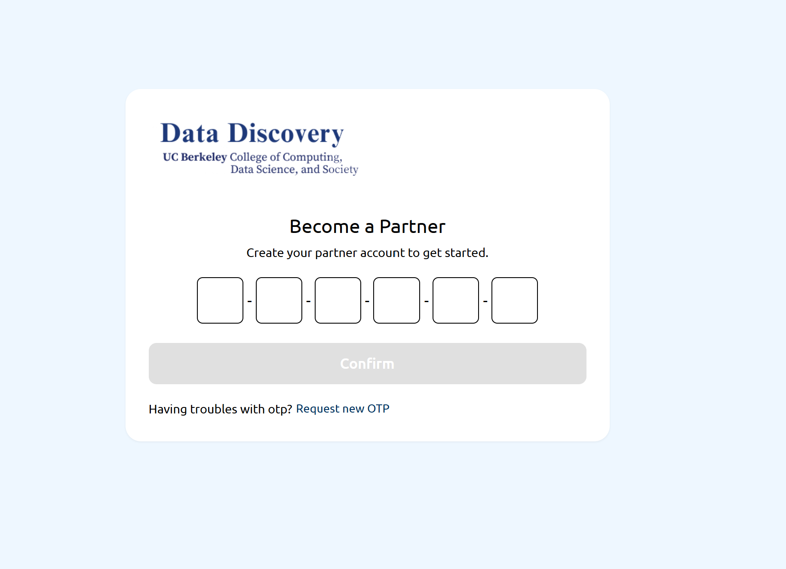
If you didn’t receive the OTP, click “Request new OTP” to resend the verification code.
Step 5: Login to Your Account
Once your account has been verified, return to the Partner Login page. Enter your registered email and password, then click “Login” to access your dashboard.
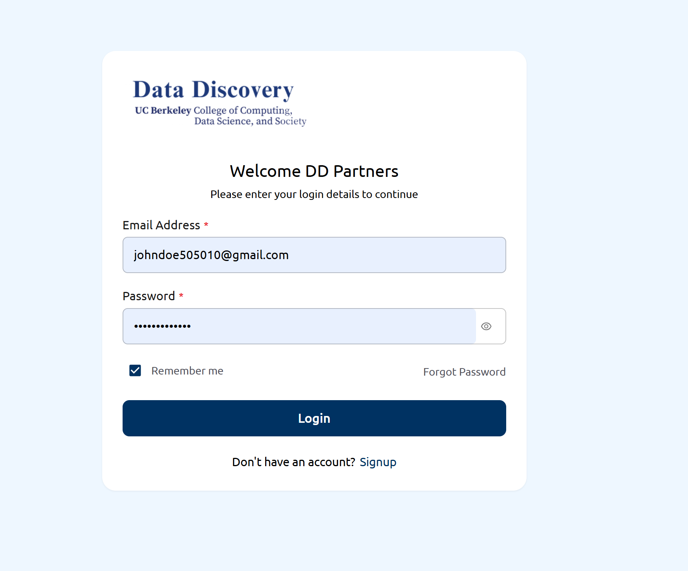
You now have full access to your Partner Dashboard, where you can manage your profile, submit project proposals, and track student applications.
Step 6: Complete Partner Information
Upon first login, you’ll be asked to provide essential information. Enter your full name, email address, and your role in the organization. Click Next to continue through the remaining onboarding steps.
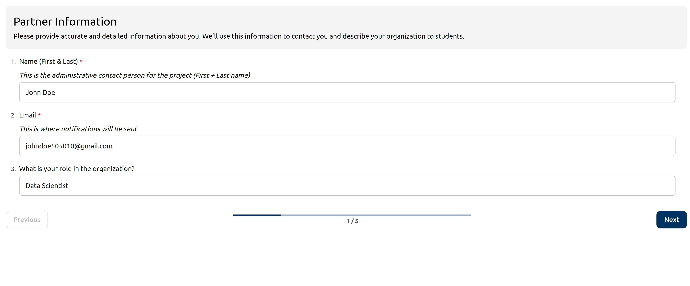
This information helps the platform connect you with students and clarify your role in the research process.
Step 7: Complete Partner Information (Part 2)
Continue filling in your organization details such as name, website, a short introduction, and select the appropriate sector for your organization (e.g., Private Industry, Non-Profit).
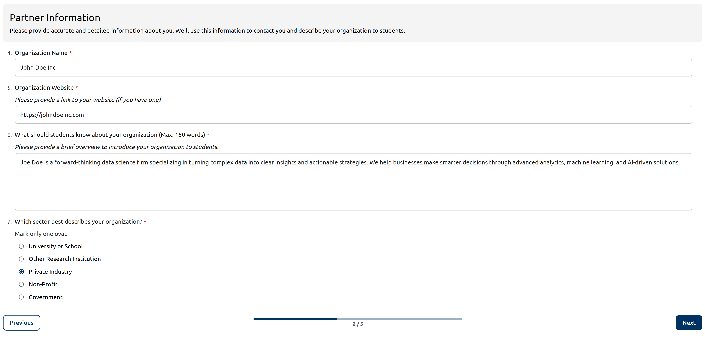
These details will be displayed to students and help match your organization with the right candidates.
Step 8: Request Cloud Credits
You will be asked whether your project would benefit from free cloud computing credits. These resources may include access to CDSS DataHub, NAIRR Infrastructure, UC Berkeley’s Savio cluster, OpenAI API, or Hugging Face models.
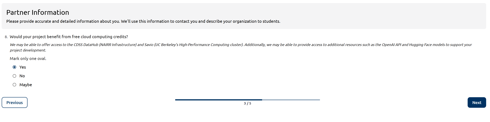
Select the most accurate response: Yes, No, or Maybe, then click Next to proceed.
Step 9: Commit to Program Requirements
You must confirm that you can meet the program’s expectations, including weekly meetings, evaluations, and support for student learning. Carefully read all the listed commitments before selecting your response.
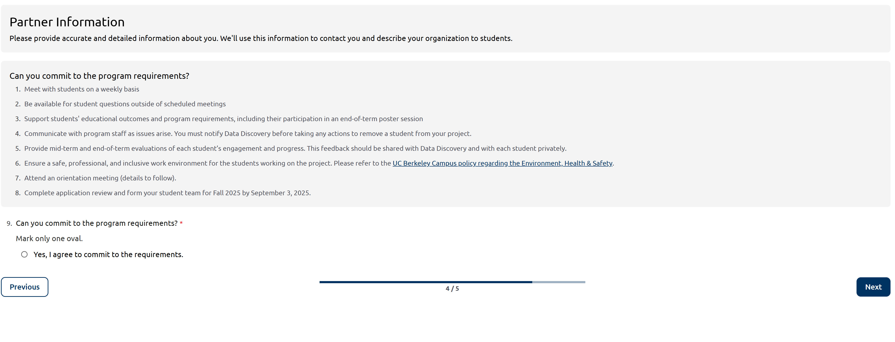
Select “Yes, I agree to commit to the requirements.” to proceed.
Step 10: Upload Your Logo & Submit
To acknowledge your institution’s contribution, you can optionally upload your logo (under 1MB and exactly 700×200 pixels). Choose “Yes, please include our logo” and upload the image file. Then click Submit to complete the process.
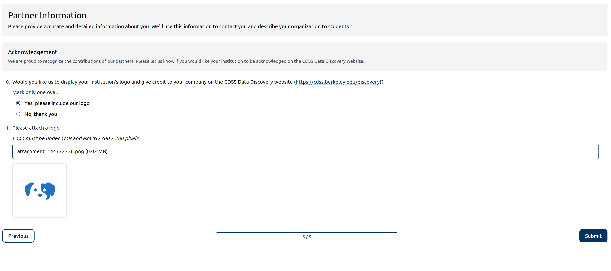
Your profile is now ready! You’ll receive a confirmation email and gain access to additional platform features.
Step 11: Explore the Dashboard
Once onboarded, you’ll land in your Partner Dashboard. From here you can view:
- Total projects
- Approved projects
- Applications received
You can also manage your profile, review applications, and extend offers using the navigation on the left.
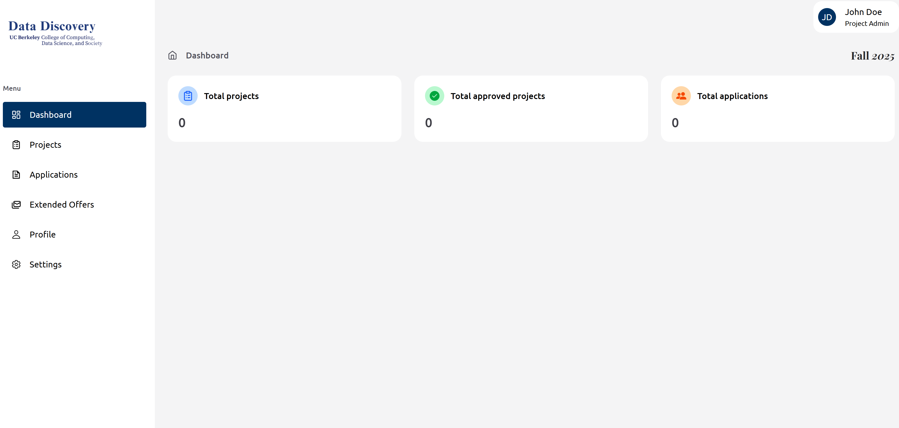
This is your command center for participating in the Data Discovery program.